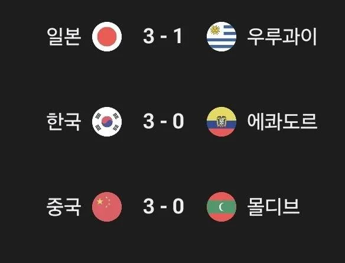

먼가 이상한게 하나있지만 그냥 넘어가자

먼가 이상한게 하나있지만 그냥 넘어가자
일본은 전설의 1군을 출격시키지 않아서 그럼
우루과이 상대로 저점수면 1군 출동 아님?
요즘 일본 폼을 잘모르는구나
일본 ㅈㄴ 잘함
몰?디브
추석 버프?
몰디브
FIFA 랭킹 173위, 943.92점 (26년 7월 20일)
Elo 랭킹 209위, 801점 (26년 7월 20일)
(궁금해서 보니까, 꼴등이 244등 동사모아)
모히또를 이기다니, 생각보다 강하다
모히또 저새끼들 시발 축구가 장난이야?
숫자 3을 좋아하는 나라들이야 참